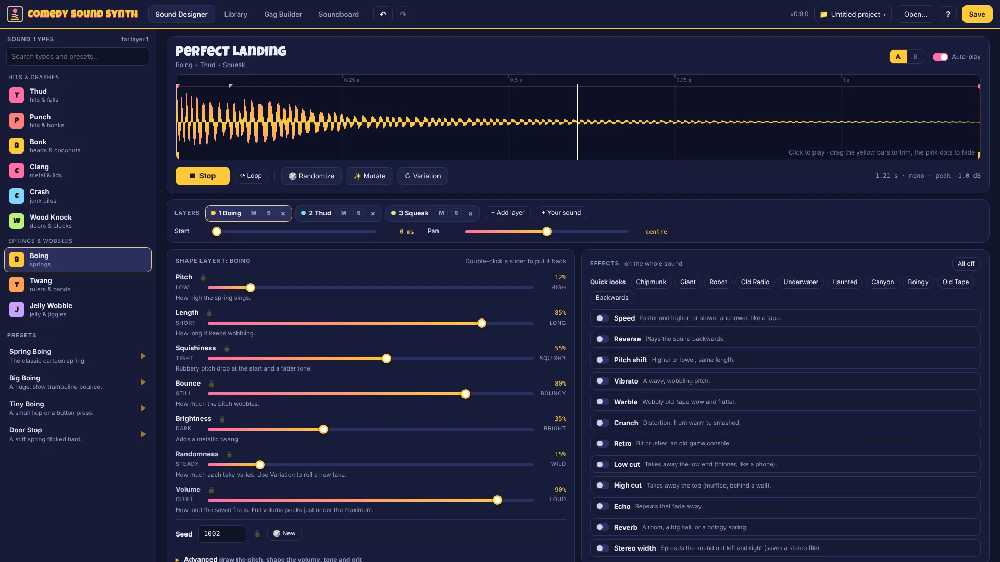
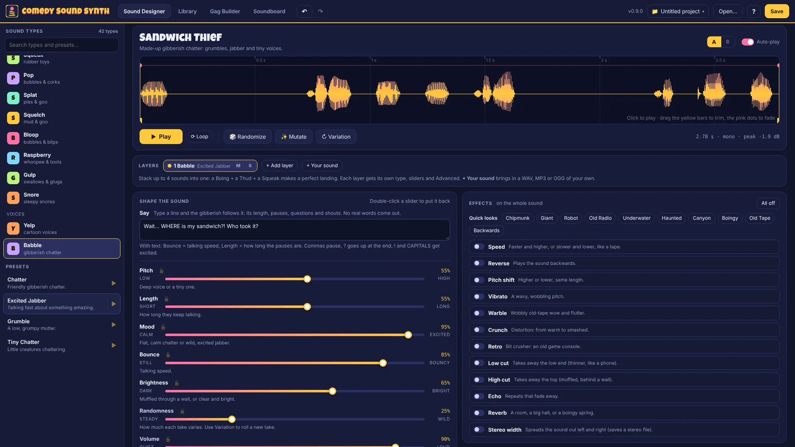
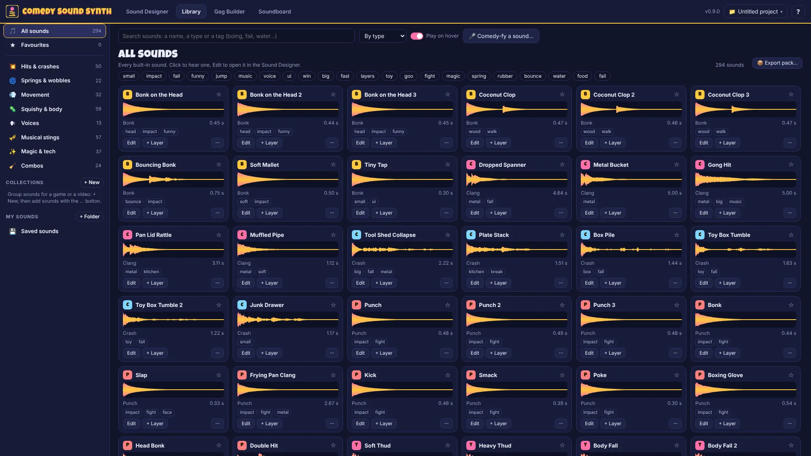
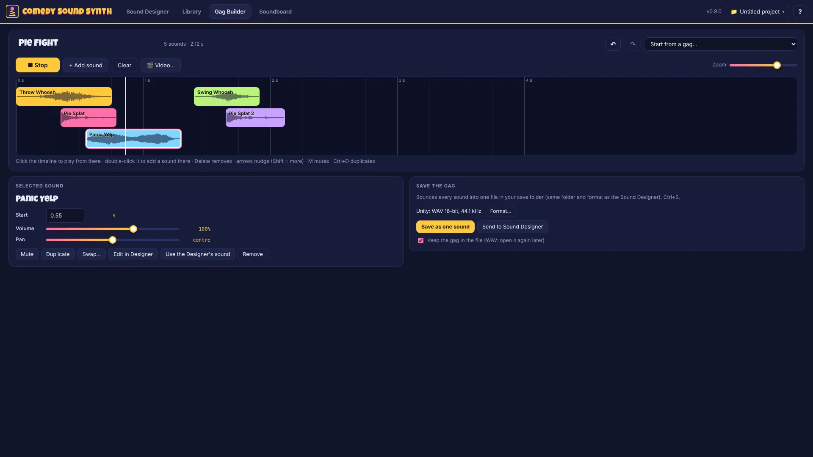

Pick a type, pick a preset, shape it
42 sound types in 7 groups and 168 presets. Plain-language sliders with a tip each: Pitch, Length, Squishiness, Bounce, Brightness, Randomness. Randomize, Mutate, Variation, locks, undo and A/B compare.
Boing. Bonk. Splat. Wah-wah-waaah.
Design cartoon sound effects yourself: pick a sound type, pick a preset and shape it with plain-language sliders. Layers, effects, a Library of 294 sounds, a Gag Builder and Video Sync, with export for any engine. Offline, yours forever, royalty-free.
The demo runs in your browser with 4 of the 42 sound types (Boing, Bonk, Slide Whistle and Babble) and saves WAV files you can use.
Every sound is made on your PC, so you can make a hundred takes until it's exactly right.
42 sound types in 7 groups and 168 presets. Plain-language sliders with a tip each: Pitch, Length, Squishiness, Bounce, Brightness, Randomness. Randomize, Mutate, Variation, locks, undo and A/B compare.

Type a line into Babble and the chatter follows it: its length, pauses, questions and shouts. No real words come out, so it works in any language.

Stack up to 4 sounds, add Echo, Reverb (with a real boingy spring), Crunch, Retro and more, or one-click looks like Chipmunk, Giant, Robot and Haunted. Draw the pitch bend and the volume shape yourself.
A Library with tags, favourites, collections and play-on-hover. Every sound opens in the editor. Bring your own WAV, MP3, OGG or FLAC in and comedy-fy it.

Put sounds on a timeline and bounce them into one gag, or load a video above the timeline and press A where the action happens. The soundtrack lines up with your video.

| System | Windows 10 or 11, 64-bit (uses the WebView2 runtime that comes with Windows) |
| Download | Installer (12 MB) or portable zip |
| Files | WAV, OGG, MP3; folders or ZIP packs with JSON / CSV manifests |
| Licence | One person, personal and commercial use; your sounds are royalty-free |
Yes. Sounds you make are yours to use in games, apps, videos, streams and client work: royalty-free, no credit needed. You can't resell them on their own as a sound pack. Details in the licence.
Any. It saves normal WAV, OGG and MP3 files, with one-click settings for Unity, Godot, Unreal, GameMaker and web games.
No. It runs fully offline on your PC, with no account and no tracking.
Yes: the free web demo has 4 of the 42 sound types and saves WAV files.
The app is new and not code-signed yet, so SmartScreen may warn you the first time. Click More info, then Run anyway. You only do this once.
itch.io handles the payment and emails you a download link. It's also in your itch.io library, with every 1.x update.
Within 14 days. See the refund policy.
One-time purchase. Secure checkout and download through itch.io.